RpcEnv: how a driver sends commands to an executor with no RPC listener
component index | Networking and ports
RpcEnv is Spark's JVM control-message router. An RpcEndpoint handles messages under a name; an RpcEndpointRef is the caller's handle to that endpoint. Multiple endpoints can share one listener. send is one-way, ask returns a future, and askSync blocks the caller for a reply. The router delivers messages or reports failures; it neither schedules tasks nor decides whether to replace a YARN container. Endpoint-ref contract
Flow at a glance
- Executor: Open a connection and register its endpoint with the driver.
- Driver: Send LaunchTask back over that same connection.
- Executor dispatcher: Deliver the queued command to the local backend.
Key distinction: Task launches need no Spark RPC listener on the executor. Fetching a result block uses a separate listener.
Show the animated flow

Which side listens?
The driver builds a NettyRpcEnv with a bind address, advertised host and requested port. It starts a transport server and a name-verification endpoint; Spark records the actual bound driver port. The executor creates its main RpcEnv with clientMode = true: it can register endpoints and receive messages, but has no listening Spark RPC port (rpcEnv.address == null). Its bootstrap configuration fetcher is a separate, temporary client. This clientMode is a transport setting, not --deploy-mode client: YARN executors use it in both deploy modes. In cluster mode the AM uses the driver's RpcEnv; in client deploy mode the AM itself creates another client-only environment. SparkEnv creation / Transport factory / Cluster AM / Client AM
Route selection
| What the caller holds |
Where the message goes |
| A ref whose address equals the sending environment's address |
Local. Post the object directly to the dispatcher's inbox; no wire serialization, socket or inline invocation of the handler. A local ask uses a promise for its reply. This includes an executor sending to self. |
A ref to a different environment with an attached TransportClient |
Remote, existing connection. Serialize and send on that channel. This is how the driver reaches a client-only executor. |
| A remote ref without an attached client, but with a listening address |
Remote, by address. A per-address Outbox queues messages while a connection thread opens a client, then drains the queue. A driver URI such as spark://CoarseGrainedScheduler@driver.example:7078 names one endpoint; 7078 here is only an example. |
The address check happens first, then the attached-client check. A client-only ref renders as spark-client://Executor; copying that string to a third JVM does not give it a way to dial the original executor. Address format / Send routing / Ask routing and timeout / Outbox
Trace one LaunchTask on the wire
- The executor backend looks up the driver's URI.
asyncSetupEndpointRefByURI parses it and asks RpcEndpointVerifier.CheckExistence(name) on the driver. It then asks the driver to RegisterExecutor and includes its own self ref inside the message. Name verification / Registration request
- On the driver, deserializing that embedded ref attaches the incoming transport client to it. Because the executor advertised no listening address, the receiver fills in the peer socket address as
context.senderAddress. The scheduler records that address to correlate disconnects and retains the actual endpoint ref for sending. It does not turn the peer's ephemeral source port into a listener. Inbound address handling / Driver registration
- Later the driver sends
LaunchTask on the retained ref. In the executor, the Netty I/O handler decodes the request and posts a one-way message by endpoint name. A dispatcher thread invokes CoarseGrainedExecutorBackend.receive on the endpoint named Executor; the backend hands off to the task worker pool. A regular remote ask uses the same routing to reach receiveAndReply; context.reply serializes the response through a transport callback, whereas a local reply completes the caller's promise. Inbound dispatch / Local versus remote reply
Sequence diagram · Open full sizeText equivalent
sequenceDiagram
participant E as Executor RPC endpoint
participant D as Driver RPC listener
participant G as Driver result getter
participant B as Executor block-transfer listener
E->>D: Open connection and register client-only endpoint ref
D->>E: LaunchTask over the existing connection
E->>D: FINISHED with an indirect result reference
D->>G: Enqueue result
G->>B: Fetch result block over the data service
B-->>G: Serialized result bytesThe reverse LaunchTask uses the existing control channel; the indirect result uses a different listener for its bytes.
State and threading. Registration maps endpoint names to message loops. Each endpoint has an inbox: OnStart first, receive or receiveAndReply during its lifetime, OnStop last. Ordinary endpoints can handle messages concurrently after startup. ThreadSafeRpcEndpoint requests serial handling; an isolated endpoint gets its own pool, and IsolatedThreadSafeRpcEndpoint uses one dedicated thread. The Netty I/O threads, RPC dispatcher, connection pool, timeout scheduler and task threads are not interchangeable. Dispatcher / Inbox / Endpoint threading contracts
Stop and diagnose. Stopping an endpoint unregisters its name; shutting down the environment stops outboxes, timer and dispatcher and closes the transport. A disconnect generates endpoint events. The YARN driver backend, not Netty, decides how to disable the executor and obtain its loss reason. A missing registered name yields RpcEndpointNotFoundException at lookup. An ask timeout means no reply arrived before the deadline, not that the peer never handled the request; ask itself does not retry. If registration and launches work but shuffle or indirect result fetches fail, inspect the separate block-transfer listener. A working driver/executor control channel does not establish that storage data is reachable. Connection events / Shutdown